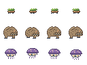

Nine families · 32 enemies
Most families come in the variants that suit them: Swift, Armored, Giant, Shielded, Brood or Venom. See the notes for what each does.
Refined sprites · all four poses
Mosstrot: leaf sway and scuttling feet. Cragjaw: rocky brow, heavy steps and a defined jaw. Murkspore: breathing cap, gills and drifting tendrils.

All types are in the editor and on the Monsters page. Behaviour, variants and placement notes
This gallery previews sprite animation. AI runs in Godot.